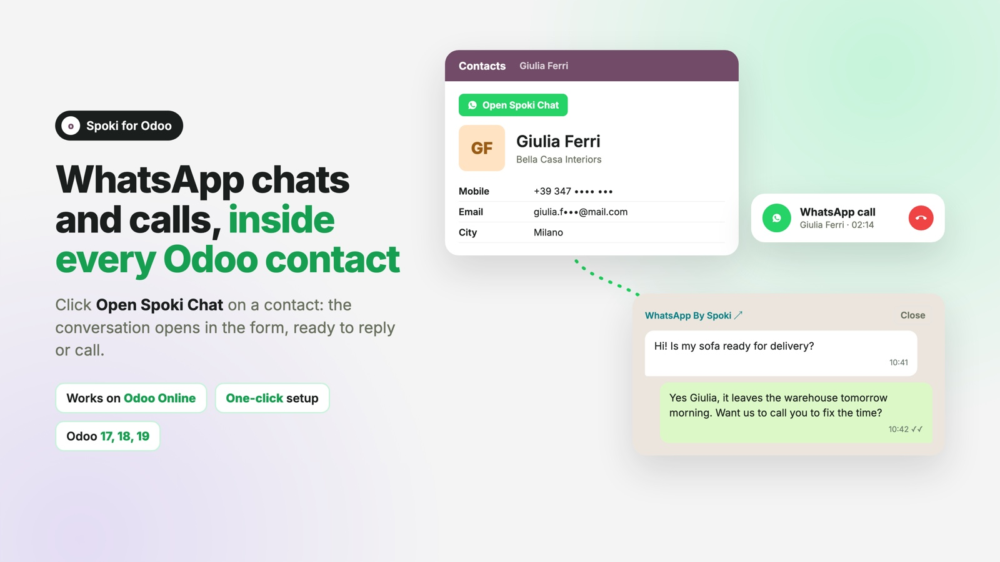
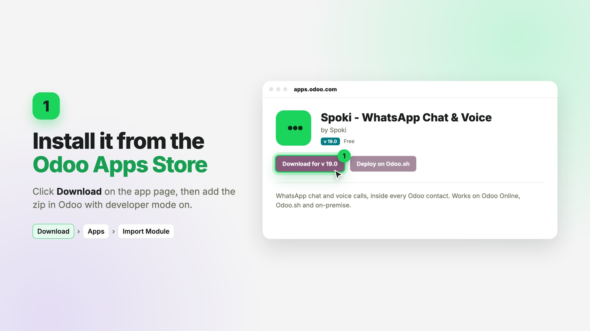
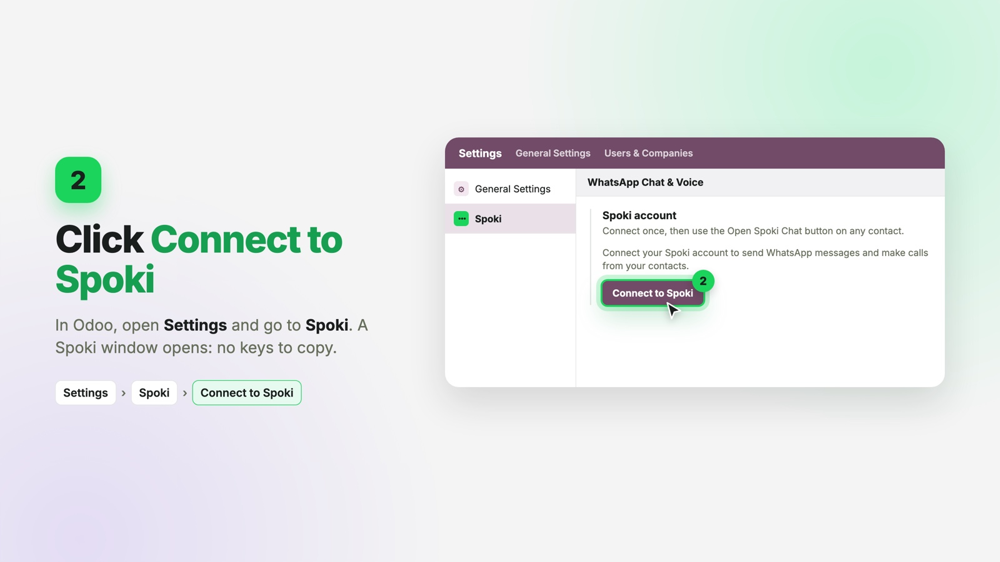
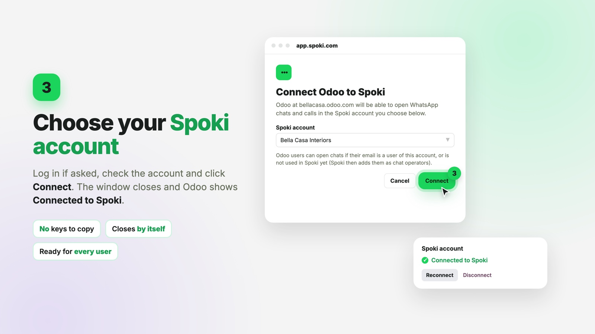

Works on Odoo Online, Odoo.sh and on-premise, with Odoo 17, 18 and 19 (Community and Enterprise). Connect it in one click: no keys to copy.
Open a WhatsApp chat with a contact straight from their Odoo record. The Open Spoki Chat button on the contact form opens the Spoki chat space in an embedded window, and the conversation loads automatically from the contact's mobile or phone number, so you can reply right away.
Place a WhatsApp voice call with the contact right from the embedded chat window: no separate dialer, no leaving Odoo. Your browser asks for microphone permission the first time.
Click Download on this page. In Odoo, turn on developer mode (add ?debug=1 to the address), go to Apps > Import Module, choose the downloaded zip and click Install. Third-party apps never appear in the Odoo Online Apps menu, so importing is the way to install them. It works the same on Odoo.sh and on-premise.

In Odoo, open Settings > Spoki and click Connect to Spoki. A Spoki window opens.

Log in if asked, check that your account is selected and click Connect. The window closes by itself and Odoo shows Connected to Spoki. Then open any contact and click Open Spoki Chat.

Questions? Visit support.spoki.com.